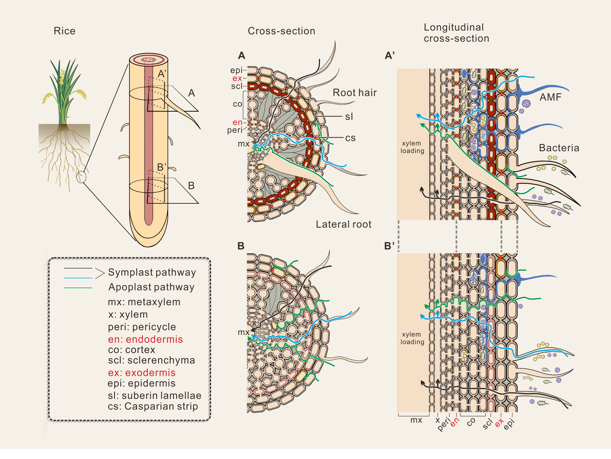
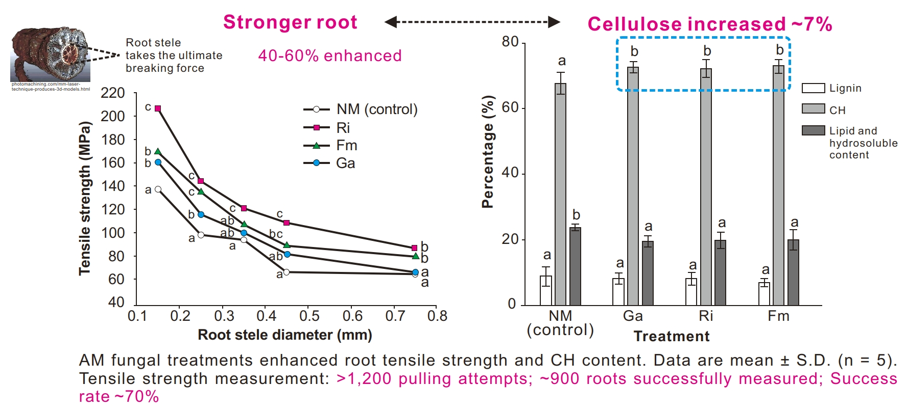

研究方向
人类活动和气候变化会对生态系统（如土壤微生物群落）造成干扰，危及生态功能。土壤微生物群落在干扰下的稳定性是土壤功能可持续性的基础。我的研究主要关注在受胁迫条件下（如暴露于污染物和物理胁迫）植物与微生物之间的复杂相互作用。
预测微生物动态并构建稳定群落
微生物群落的复杂性、个体间的相互作用强度、相互作用的多样性以及细菌群落网络的稳健性，是微生物群落稳定性、功能和可预测性的基础。在干扰下维持稳定微生物群落的能力对于生态系统的可持续性至关重要。我的研究旨在理解微生物群落在应对干扰时稳定性的机制，并制定增强生态系统中微生物群落稳定性的策略。
55个物种群落互作网络动态模拟 (邢明歌绘制)
植物-微生物互作系统中污染物的环境行为
植物与微生物的互作在自然和人工生态系统中非常常见且至关重要，这种互作对于抗逆性和恢复力至关重要。我的研究兴趣之一是研究污染物，特别是镉、砷和铬，在植物-微生物生长系统中的行为。

微生物定殖下植物根中金属（类）离子的质外体和共质体运输途径。我们的综述了共生真菌对水稻砷和镉吸收、运输和固持的影响。链接
物理胁迫对植物-微生物互作的影响
植物生长常常遭受各种物理胁迫，例如边坡土壤的压实。我的研究兴趣之一是探索土壤微生物及其相关有机质如何影响植物根系强度、土壤团聚体和土壤水力特性。
 共生真菌定殖的香根草根系拉伸实验。
共生真菌定殖的香根草根系拉伸实验。

共生真菌定殖后根系纤维素含量更高，根系更强壮。链接

共生真菌使根系更强韧。链接